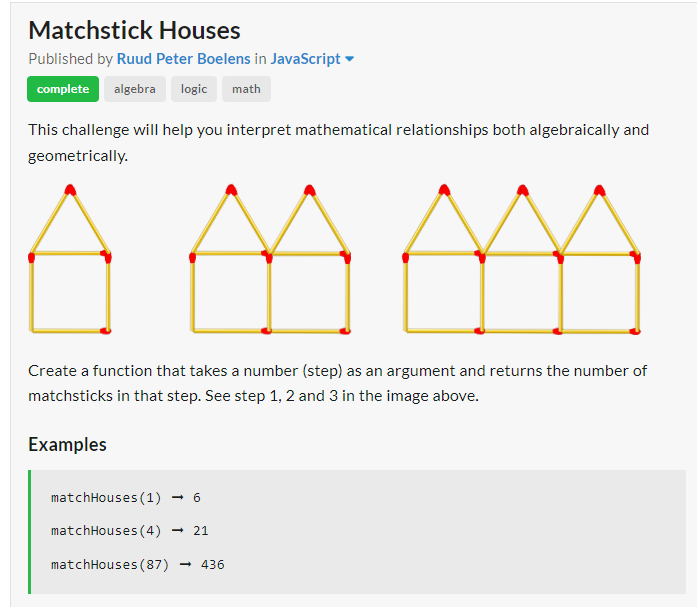

Palindrome Break- LeetCode

The goal here was to assess whether an integer can be read the same backwards as forwards.

I started by storing the value of x in a local variable. I then assigned to a new local variable the value of x.toString(). this was to convert the number into a string to be able to use manipulation methods on it down the line. next I created another local var update, where i chained the .split("") method, which created an array with each number as an individual index, used the reverse method to reverse the order and join method to convert back to string. finaly in the result variable i stored the converted string back to number. i then assessed whether the number is equal to x.
Solution

Matchstick Houses- Edabit

The goal was to create a function that took a number as an argument and identified the number of match sticks used for that number. I started by first identifying the pattern of match sticks in the requirement. I noticed that per number of matchhouses, the number of matchsticks per house when compared to the intial model (6) decreased by 1. I then came up with the calculation 6 * (number of matchhouses) - step + 1. i had noticed that when i ran this calculation it worked for every test case provided initially. I created 2 exit conditions based off of the requirements
Solution

Celsius to farenheit conversion algorithm- FCC JS DSA

The goal was to convert a given temperature using the celsius metric to farenheit. I started by doing a little research on how one would express this conversion mathematically. I discovered that the formula for this conversion is the celsius temperature multiplied by 9 divided by 5 + 32. I stored this equation in a variable, adding the parameter of the function to the equation and returned that variables value

Solution